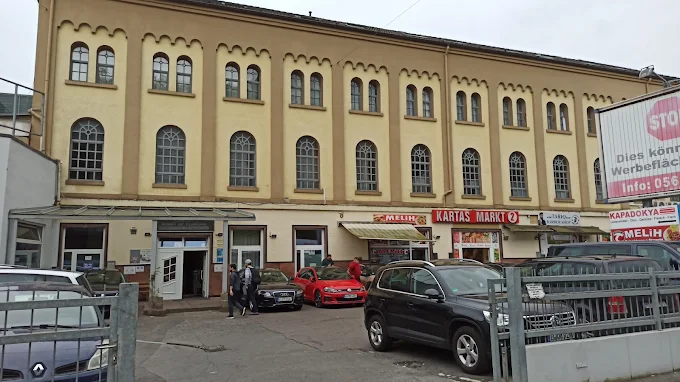
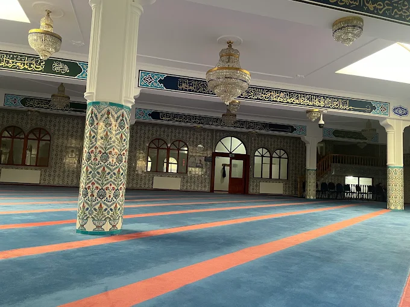
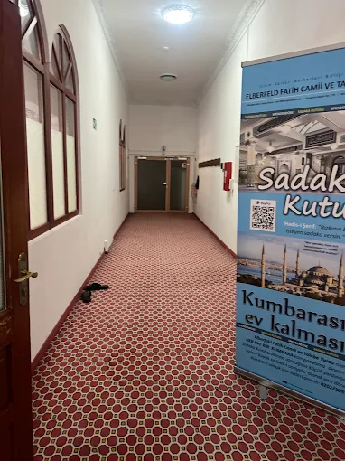
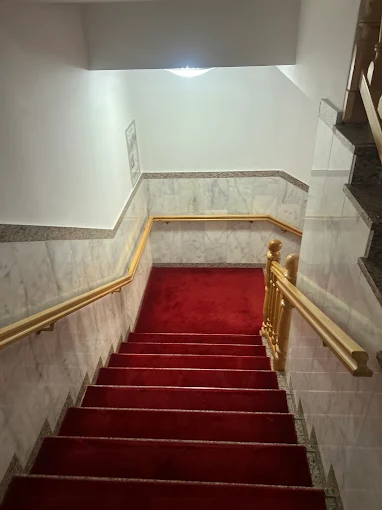

Hakkımızda
Derneğimizin kökenleri, değerleri ve tarihçesi hakkında Wuppertal'ın Elberfeld semtinden daha fazla bilgi edinin.
Wuppertal'ın İlk Cami Cemaati
Cemaatimiz, vatandaşlara hizmet yolunda uzun bir geleneğe sahiptir.
1970'lerden Beri Bir Cemaat
Derneğimizin kökleri 1970'li yıllara dayanmaktadır. Böylece cemaatimiz, Wuppertal'daki ilk cami cemaatini ve en eski dini derneği oluşturmaktadır. O zamandan bu yana kamu yararı için aktif olarak çaba göstermekte ve insanlara entegrasyon ile dini gelişimlerinde eşlik etmekteyiz.
Derneğimiz, üyelerinin düzenli aidatları ve gönüllü bağışlar yoluyla tamamen kendi kendini finanse etmektedir. Tüm vatandaşlara açığız ve önyargıları azaltmak ile barışçıl bir birlikte yaşamı teşvik etmek için düzenli diyalog arayışındayız.
Misyonumuzun merkezi bir unsuru, klasik peygamber sözlerinden türemiştir: İnsanların en hayırlısı, insanlara faydalı olandır. Bu ilke; eğitim, öğretim ve sosyal hizmet alanlarındaki günlük çalışmalarımızı motive etmektedir.
Misyonumuz ve Değerlerimiz
Almanya Federal Cumhuriyeti'nin özgürlükçü-demokratik temel düzenine kayıtsız şartsız bağlıyız ve Anayasamızın temel değerlerine saygı duymaktayız.
Ortaklığa dayalı entegrasyon ve toplumsal dayanışma, çalışmalarımızın merkezinde yer almaktadır. Derneğimiz, parti siyaseti bakımından tamamen tarafsızdır ve kamu yararına çalışmaktadır.
Dernek Binamız ve Mekanlarımız
Friedrich-Ebert-Straße 175 adresindeki bina, dini eğitim ve buluşma için merkez olarak hizmet vermektedir.



